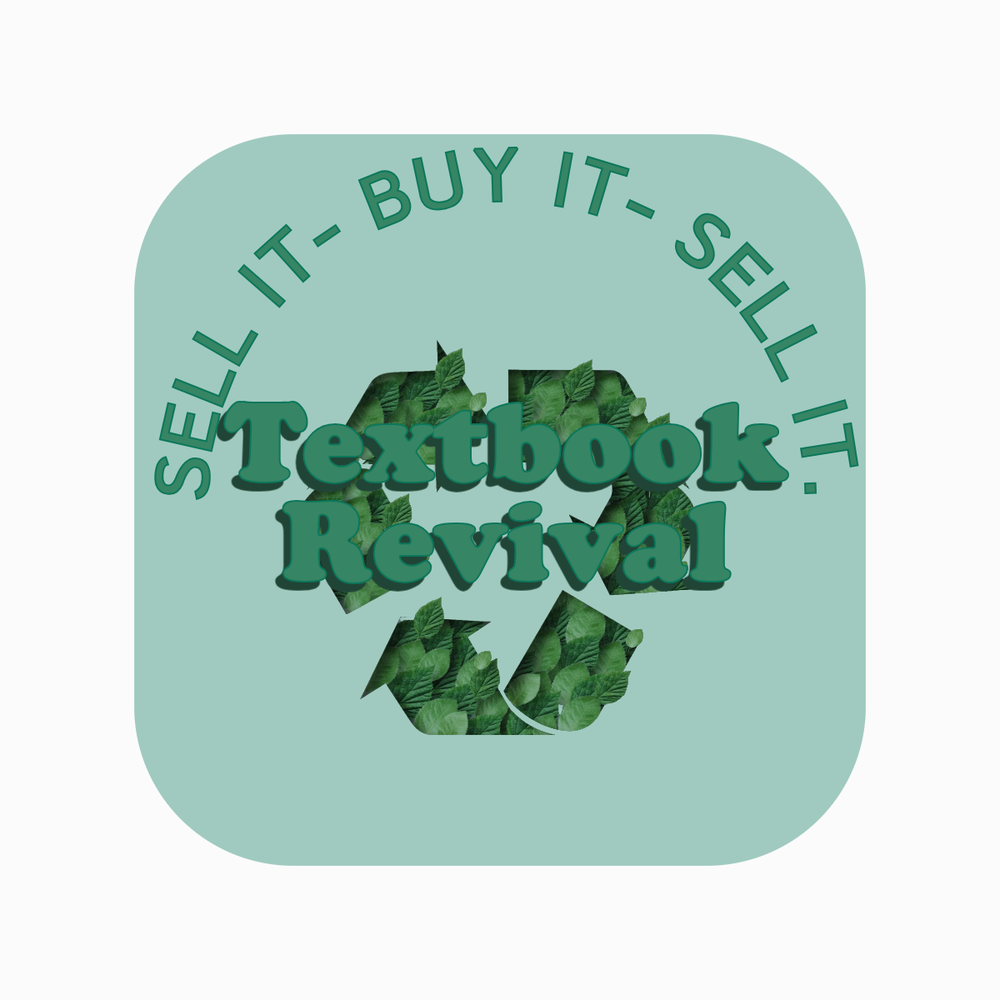
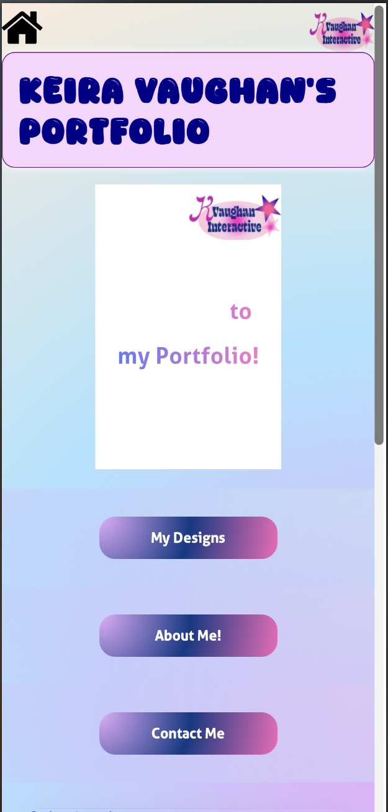

PROJECTS & WORK
TextBook Revivial
URI Project: Side Hustle
- Created a second hand textbook company on The Kanu App for my Entrepreneurship class
- Orchestrated a seamless ordering process by having customers order through google forms, making it an easy process for the customers
- Designed a logo for Textbook Resale utilizing programs like Adobe Illustrator, and Canva, to make sure it fits the brand identity

IDM 221: Portfolio for Phone layout
Utilizing beginning HTML and CSS concepts
Link To Portfolio
Intro to Design for Media Work
Static & Dynamic Compositions using simple shapes.
Above is a project, in my design class, focusing on Static/Dynamic shapes on Adobe Illustrator. The 3 sections include exact symmetry, asymmetry, and implied balance. The main aspect of the project is was that the shapes have to still look like the shapes, but we were able to distort them. The goal was to make the designs almost look 50/50.

Project 2: Expressive Line Quality with a Figure and Ground relationship


The goal of this project was to create expressive lines that derive from my Initials. On the right 3, the goal was to create backgrounds based off of real life things outdoors. For example on the right the top was a pothole with cracks around it, the one below is the structure below a bridge, and the last one was crates on the sidewalk. Being able to abstract these everyday items was a fun and interesting process, because it caused me to think outside of the box.